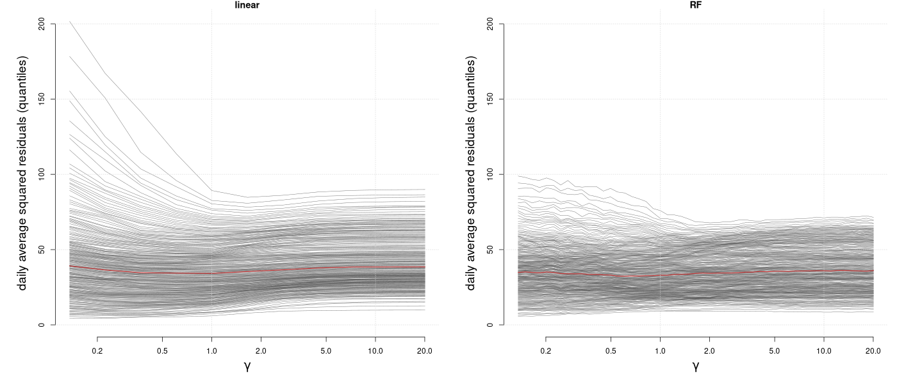

In the same spirit as the spectral objective, we can use this software also to minimize the anchor loss (Rothenhäusler et al. 2021). Anchor Regression is a regularized regression method providing robustness against distribution shifts of environments. This is usefull, if one wants to predict optimally in a worst case scenario. An example usecase could be to predict health oucome of a patient based on their medical history where a model is trained on a larger population of patients. Standard regression methods would optimize the population performance, while Anchor Regression would optimize for the worst case scenario, i.e. the patient with the most different medical history.
Here, we optimize the Anchor Random Forest using the anchor loss where with being the linear projection operator onto and controlling the strength of distributional robustness (Bühlmann 2020). Another approach would be to boost the anchor loss instead of minimizing it explicitly which provides a much faster approach but also more parameters to choose. Check out anchorboosting (Londschien et al. 2025) for this apporach. (We want to thank Malte Londschien for all the fruitful discussions about the extension of Anchor Regression to non-linear models.)
Below, we reproduce Figure 4 from (Rothenhäusler et al. 2021) using the Bike-sharing data set (Markelle Kelly 2017) and add the Anchor Random Forest to the comparison. The goal is to predict the number of bike rentals based on the weather conditions robustly over different days. So in contrast to standard machine learning, we want to performe well on the most difficult day. This is why we look at the quantiles of the prediction error conditional on the day . With stronger regularization (higher ), we see upper quantiles of the prediction errors (the more difficult days) decrease, while we lose performance on the easier days.

Looking at the performance of different quantiles, it seems reasonable to use to have optimale “worst case performance”. Below we show how you could fit an Anchor Random Forest in this case. For that we first load the data from https://archive.ics.uci.edu/dataset/275/bike+sharing+dataset and preprocess it as in (Rothenhäusler et al. 2021).
# load data
dat <- read.csv("hour.csv")
dframe <- dat[, c("dteday", "yr", "mnth", "holiday", "weekday", "workingday",
"weathersit", "temp", "atemp", "hum", "windspeed", "cnt")]
dframe$cnt <- residuals(lm(sqrt(cnt) ~ as.factor(holiday) + as.factor(weekday),
data = dat))To have an out-of-environment performance estimate, we group the days into five groups and estimate the Random Forest while leaving one group out for testing.
# group days in five groups
number_days <- length(unique(dframe$dteday))
env <- rep(0, nrow(dframe))
folds <- 5
for(i in 1:folds){
selected_days <- unique(dframe$dteday)[
ceiling((i-1)*number_days/folds+1):ceiling(i*number_days/folds)]
env[dframe$dteday %in% selected_days] <- i
}
env <- as.factor(env)We create the anchor by encoding the different days as dummy variables.
# Anchor variable days
anchor <- model.matrix( ~ dteday - 1, data = dframe)Estimation of Anchor Random forest with
.
Here we use env as an encoding of the five groups and
estimate 100 trees for each of the left out environment.
library(SDModels)
fit <- SDForest(cnt ~ temp + atemp + hum + windspeed, dframe, gamma = gamma,
Q_type = 'no_deconfounding', nTree_leave_out = 100, A = anchor,
envs = env, mc.cores = 100, cp = 0)